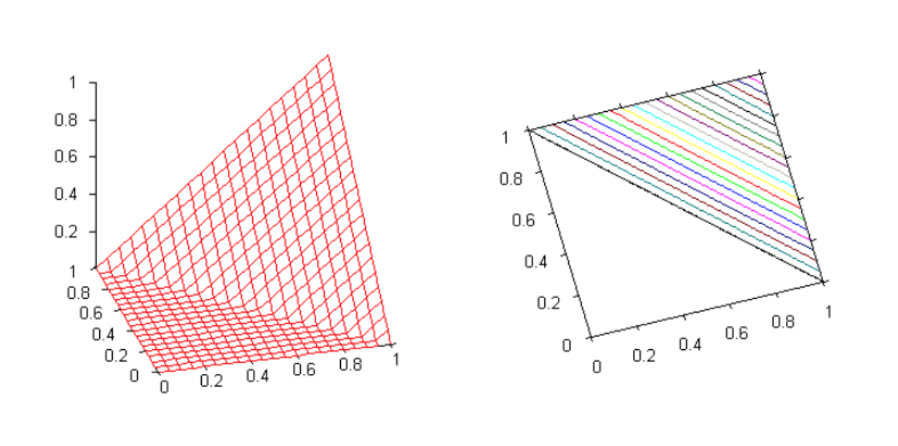
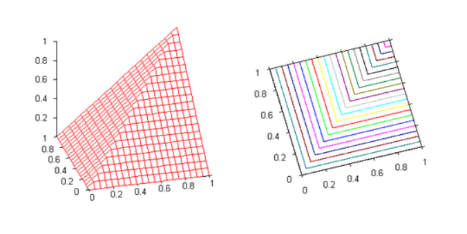
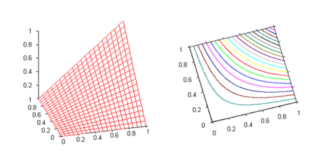
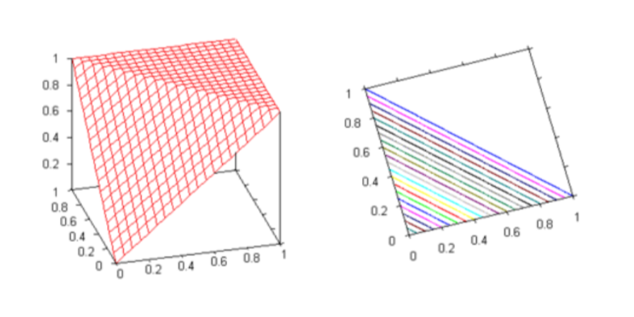
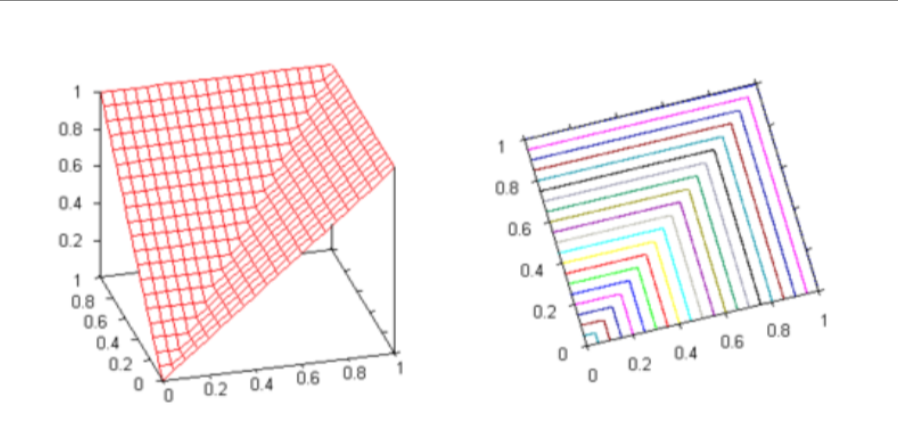
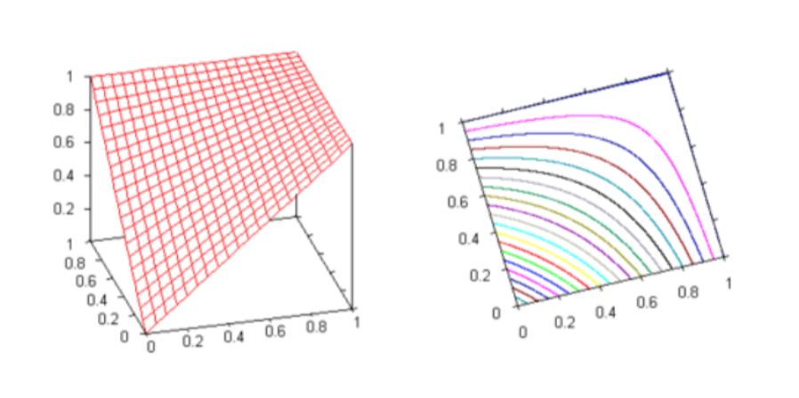
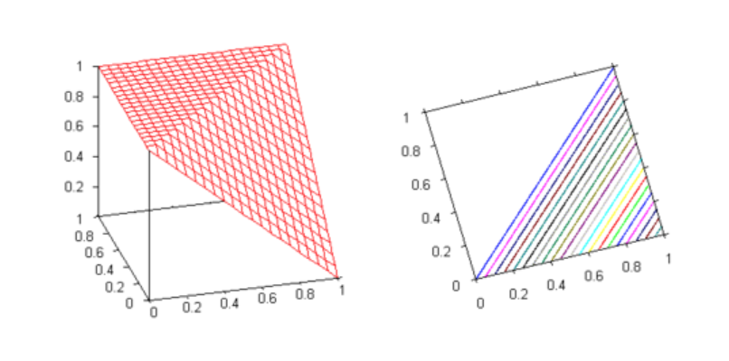
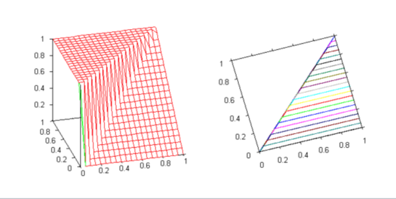
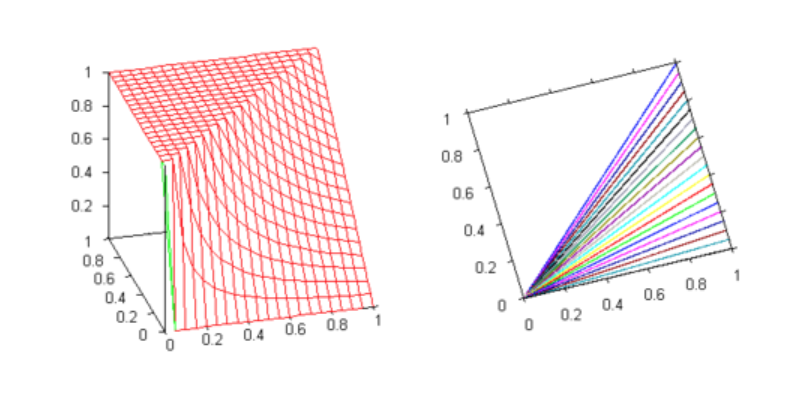

Updated 2019-03-15
Fuzzy Propositional Logic
Logic (from the Greek "logos", which has a variety of meanings including word, thought, idea, argument, account, reason or principle) is the study of reasoning, or the study of the principles and criteria of valid inference and demonstration. It attempts to distinguish good reasoning from bad reasoning.
Conventional Logic typically deals with binary truth values {True/False}. However, real world (and human feelings for certain) seldom works in binary. As humans, we constantly make choices on vague or imprecise judgements. For example, one may not know for sure if it is going to rain (unless of course you are living in London, when not a day goes by without raining) and yet she may decide to carry an umbrella, there by making binary decision based on non-binary reasoning.
For computers to be able to reason in real world and to solve real world problems, they must be equipped to make sense of such fuzzy data which is neither completely true, nor completely false. That is where Fuzzy Logic comes to the rescue.
It is a branch of many-valued symbolic logic which has comparative notion of truth, syntax, semantics, axiomatization, truth-preserving, completeness, etc. Broadly speaking, Fuzzy logic serves mainly as apparatus for fuzzy control, analysis of vagueness in natural language and several other application domains. It is one of the techniques of soft-computing, i.e. computational methods tolerant to suboptimality and impreciseness (vagueness) and giving quick, simple and sufficiently good solutions.
In this blog post, I will summarise Fuzzy propositional logic. This post is not intended to be a rigorous mathematical treatment of the subject but rather a cheat-sheet that can be consulted to revise and reference important concepts.
Crisp and Fuzzy Sets¶
In classical mathematics, one deals with collection of objects called sets. It is usually convenient to fix some universe U in which every set is assumed to be included1. Then a set A can be thought of as a function on U which takes a values of 1 for objects that belong to A, 0 otherwise. Such a function is called the characteristic function of A, \chi_A(.):
Obviously, this implies that there exist a bijective mapping between characteristic function and maps. In fact, this is how sets are defined in ZFC Set Theory.
Crisp Set
Let X be the set of all real numbers between 0 and 10 and let A = [5, 9] be the subset of X of real numbers between 5 and 9. This results in the following figure:

Fuzzy sets generalise this definition, allowing elements to belong to a given set with a certain degree. Instead of considering characteristic functions with value in {0, 1}, we consider now functions valued in the interval [0, 1]. A fuzzy subset F of a set U is a function \mu_F(·) assigning to every element x \in U the degree of membership of x to F:
Fuzzy Set
Let, as above, U be the set of real numbers between 1 and 10. A description of the fuzzy set of real numbers close to 7 could be given by the following figure:

Operations between crisp sets¶
In classical set theory there are some basic operations defined over sets. Let U be a set and 2^U (also known as power set) be the set of all subsets of U. Since there exists, a bijection between sets and the corresponding characteristic function, one could equivalently say that a power set, 2^U is a set defined by a characteristic function \chi_{2^U}: U \rightarrow \{0, 1\}.
The operation of union, intersection and complement are defined in the following ways:
| Operation | Crisp Set | Characteristic Function |
|---|---|---|
| Union | A \cup B = \{x \mid x \in A \ or\ x \in B\} | \chi_{A \cup B}(x) = max(\chi_A(x), \chi_B(x)) |
| Intersection | A \cap B = \{x \mid x \in A \ and\ x \in B\} | \chi_{A \cap B}(x) = min(\chi_A(x), \chi_B(x)) |
| Compliment | \bar{A} = \{ x \in U \mid x \notin A \} | \chi_{\bar{A}}(x) = 1 - \chi_A(x) |
Operations between fuzzy sets¶
While concept of binary membership (\in) does not exist in fuzzy sets, we can draw parallels to the characteristic function for crisp set and apply that to membership functions of fuzzy set analogously to derive set operations.
| Operation | Fuzzy Set Membership Function |
|---|---|
| Union | \mu_{A \cup B}(x) = max(\mu_A(x), \mu_B(x)) |
| Intersection | \mu_{A \cap B}(x) = min(\mu_A(x), \mu_B(x)) |
| Compliment | \mu_{\bar{A}}(x) = 1 - \mu_A(x) |
Fuzzy Set Operations
Let A and Bs be fuzzy subsets of U given by membership functions \mu_A and \mu_B:

| Union | Intersection | Compliment |
|---|---|---|
| \mu_{A \cup B}(x) = max(\mu_A(x), \mu_B(x)) | \mu_{A \cap B}(x) = min(\mu_A(x), \mu_B(x)) | \mu_{\bar{A}}(x) = 1 - \mu_A(x) |
 |
 |
 |
Fuzzy propositional logic¶
In classical propositional logic, a propositional language consists of only propositions, i.e., statements that can be assigned either True or False. Statements of the form "It is raining.", "Today is Sunday.", "2+2=5" are all examples of valid propositions. "Open the door", "Ecstatic feeling", "Run!", "How many planets are there in solar system?" cannot be assigned simple binary truth values and are thus not propositions.
It is convenient to define unary and binary operations on propositions. A unary operator takes one proposition to create a new proposition. Since there are two truth values, there are exactly four (2^2) unary operators, there are Identity, Compliment, Tautology and Contradiction.
| X | Identity (X) | Compliment \bar{X} | Tautology \top(X) | Contradiction \bot(X) |
|---|---|---|---|---|
| T | T | F | T | F |
| F | F | T | T | F |
A binary operator (often called a connective) takes two proposition to create a new proposition. Consequently, it is possible to define 16 (2^4) binary connectives. Most prominent of those are Conjunction, Disjunction, Implication, Equivalence, and Xor. It is easy to show that all 16 connective equivalent can be obtained by unique application of these binary connectives 2.
| X | Y | X \wedge Y | X \lor Y | X \Rightarrow Y | X \Leftrightarrow Y | X \oplus Y |
|---|---|---|---|---|---|---|
| T | T | T | T | T | T | F |
| T | F | F | T | F | F | T |
| F | T | F | T | T | F | T |
| F | F | F | F | T | T | F |
We can generalize the classical propositional logic to incorporate fuzziness, such that proposition values are in [0, 1] and that if x > y, then x is more true than y.
Fuzzy Conjunction: Triangular-norm (T-norm)¶
The conjunction connective in fuzzy logic is formalized by a binary operation on truth values, called t-norm, which satisfy a minimal set of properties to capture the intuitive meaning of conjunction.
Definition T-norm
A t-norm is a binary operation \otimes:[0, 1]^2 \rightarrow [0, 1] satisfying the following conditions:
- Commutativity: x \otimes y = y \otimes x
- Associativity: x \otimes (y \otimes z) = (y \otimes x) \otimes z
- Non-decreasing: x \leq y \Rightarrow z \otimes x \leq z \otimes y
- Zero and One: 0 \otimes x = 0 and 1 \otimes x = x
A t-norm \otimes is continuous if the function \otimes:[0, 1]^2 \rightarrow [0, 1] is a continuous function in the usual sense.
Examples¶
| Name | Definition | Visualization |
|---|---|---|
| Lukasiewicz t-norm | x \otimes y = max(0, x + y − 1) |  |
| G̈odel t-norm | x \otimes y = min(x, y) |  |
| Product t-norm | x \otimes y = x \cdot y |  |
Fuzzy Disjunction: T-Conorm (or S-norm)¶
The conjunction connective in fuzzy logic is formalized by a binary operation on truth values, called t-conorm, which satisfy a minimal set of properties to capture the intuitive meaning of disjunction. The name t-conorm is comes from the fact that disjunction is a dual operation to conjunction.
Definition T-conorm (also called S-norm)
A t-conorm is a binary operation \oplus:[0, 1]^2 \rightarrow [0, 1] satisfying the following conditions:
- Commutativity: x \oplus y = y \oplus x
- Associativity: x \oplus (y \oplus z) = (y \oplus x) \oplus z
- Non-decreasing: x \leq y \Rightarrow z \oplus x \leq z \oplus y
- Zero and One: 0 \oplus x = x and 1 \oplus x = 1
Given a t-norm \otimes, a corresponding t-conorm can be derived as
Examples¶
| Name | Definition | Visualization |
|---|---|---|
| Lukasiewicz t-conorm | x \oplus y = min(1, x + y) |  |
| G̈odel t-conorm | x \oplus y = max(x, y) |  |
| Product t-conotm | x \oplus y = x + y - x \cdot y |  |
Fuzzy Implication: Residuum¶
Intuitively the more x \Rightarrow y is true, the less additional information is carried by y w.r.t., x. Thus, for t-norm \otimes, following property should hold for residuum \Rightarrow :
Semantics of residuum are therefore defines as the maximum truth value to be "added" to x to obtain y.
Definition Residuum
The residuum of the t-norm \otimes is a binary operation \Rightarrow:[0, 1]^2 \rightarrow [0, 1] is defined as
Properties of Residua:
- If x \leq y then (x \Rightarrow y) = 1
- (1 \Rightarrow x) = x
- (x \Rightarrow 1) = 1
- If x \leq y then x = y \otimes (y \Rightarrow x)
Examples¶
If x \leq y, then (x \Rightarrow y) = 1, however, when x > y, then
| Name | Definition | Visualization |
|---|---|---|
| Lukasiewicz Residuum | (x \Rightarrow y) = 1 - x + y |  |
| G̈odel Residuum | (x \Rightarrow y) = y |  |
| Product Residuum | (x \Rightarrow y) = y/x |  |
Fuzzy Negation: Precompliment¶
In classical propositional logic, negation can be thought as implication of contradiction, i.e., \bar{X} \Leftrightarrow (X \Rightarrow \bot) can shown in table below
| X | \bot | (X \Rightarrow \bot) | \bar{X} |
|---|---|---|---|
| T | F | F | F |
| F | F | T | T |
Negation can be defined analogously for fuzzy propositional logic.
Definition Precompliment
For every residual operator $ \Rightarrow $ (and therefore for every t-norm), the precomplement operator denoted by (−), is defined as:
Examples¶
| Name | Definition |
|---|---|
| Lukasiewicz precompliment | (-)x = 1 - x |
| G̈odel precompliment | (-)x = \begin{cases} 1 & x = 0 \\ 0 & otherwise \end{cases} |
| Product precompliment | (-)x = \begin{cases} 1 & x = 0 \\ 0 & otherwise \end{cases} |
This concludes the post on fuzzy propositional logic. The next step to study fuzzy first order logic or fuzzy predicate logic involving quantors, namely for all (\forall) and there exists (\exists).
References¶
- Neural-Symbolic Learning and Reasoning with Constraints Tutorial at IEEE IJCNN 2018
- T-norm, Wikipedia